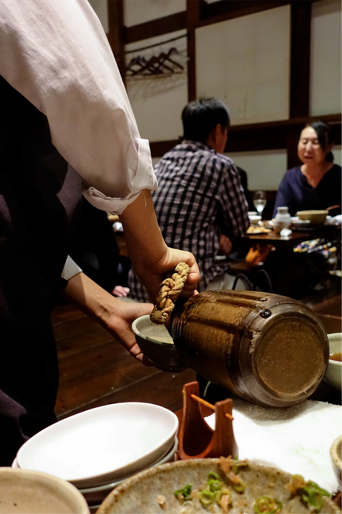
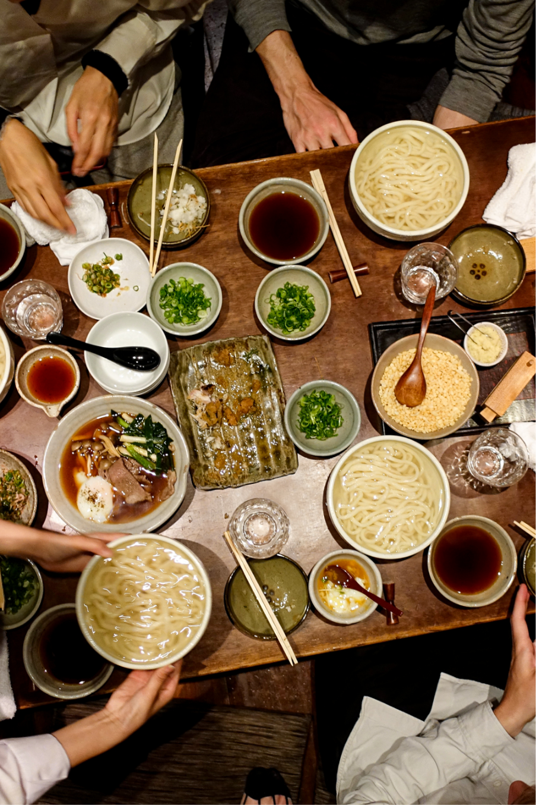
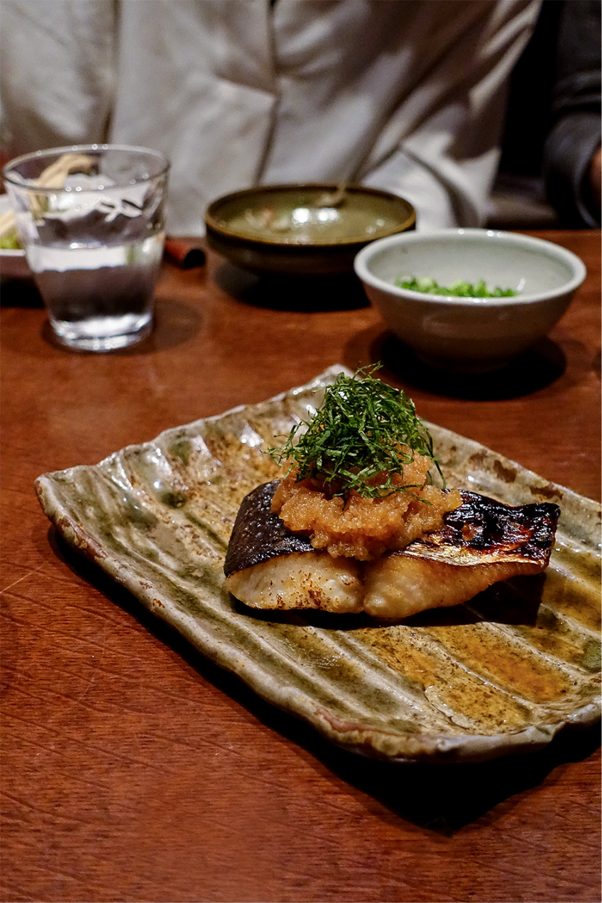
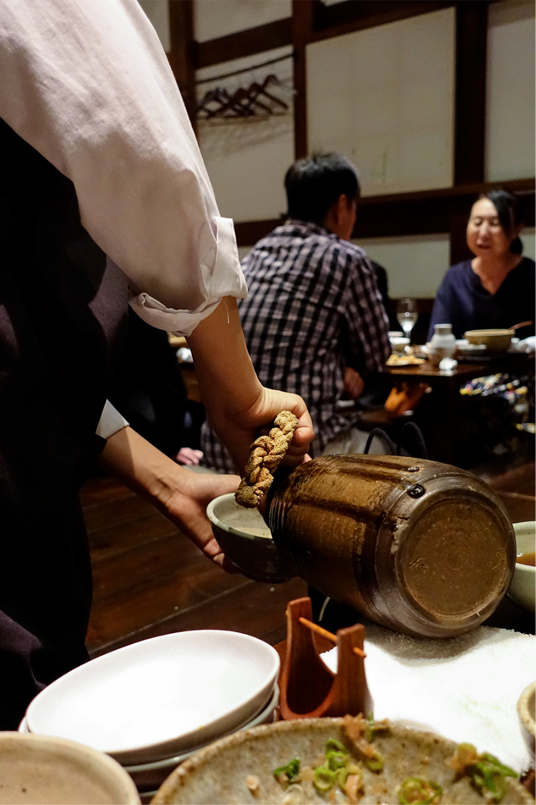
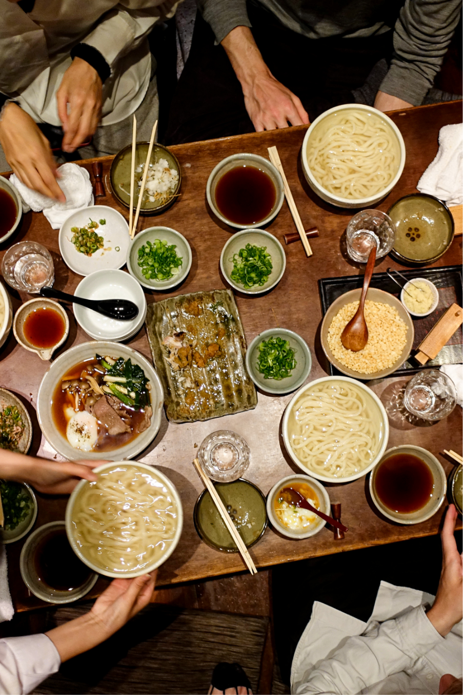
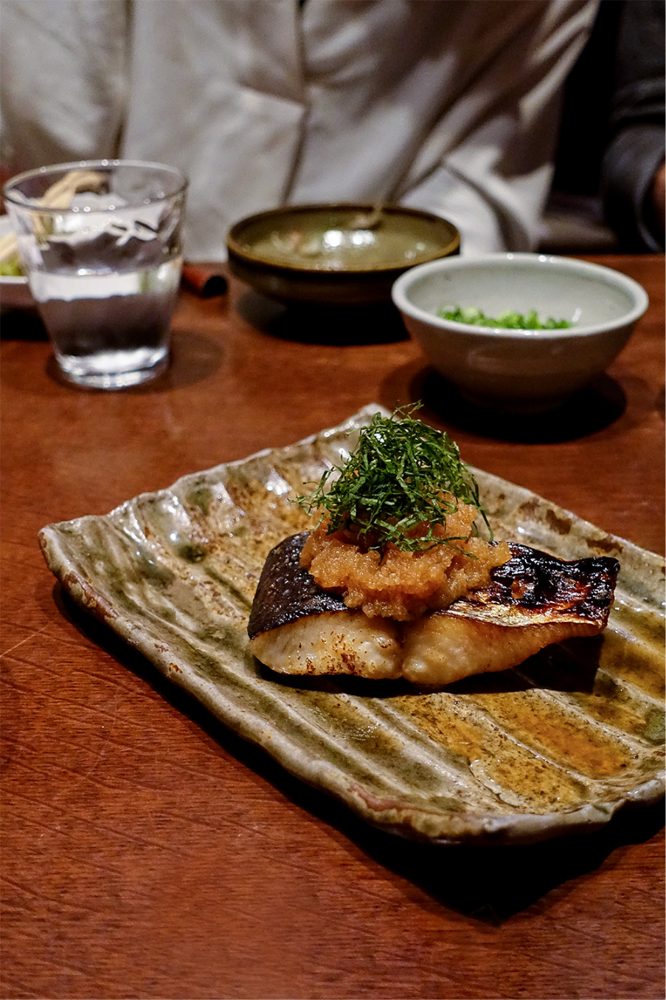

Find speciality restaurants, lively izakayas, cozy cafés, hidden bars and smirky yatais – recommended by people with a deep passion for Japanese food culture.
Language:
English
Cities: Cities: Tokyo, Osaka, Kyoto, Kumamoto (and more to come)
Software:
iOS, Android
Costs: it’s free
Ads: hell no!
Features
特徴
Choose a city and discover your favorite spot.
Get a first impression of the place, read why it’s worth a visit and receive helpful insights. Along the way you can dig deeper about certain dishes and ingredients.
An offline map helps you to find the places easily. Gather your favorite spots and check the glossar to dig deeper on certain dishes and ingredients.
At a glance
一見してわかること
Offline Map (Most useful feature)
Japanese cities are among the densest places in the world and if you aren’t able to speak or read Japanese, it can be very tricky to find certain spots. The app supports by offering an offline map and access description.
Glossary (Coolest feature)
For those who want to know more the app offers additional short articles about lesser known ingredients and dishes as well as other fun facts. You can discover these information bits in the restaurant descriptions or alphabetically ordered in the glossary.
Design
The app was realized in close collaborations between Harubaru Copy Club and Milk Interactive. For us the design is as important as the content. We aim to show the restaurants form their most beautiful side and give the users an app that is not only helpful, but also fun to discover.
Useful Insights
Find out what kind of Japanese food is served in the restaurant and what the people, who recommended the place love most about it. And besides that get useful tipps on specialities, prices, opening hours, and how to contact.
Contributers
特徴
Nachnachme
- Restaurant-owner
- based in Zürich
- Favorite dish: Otoro
Nachnachme
- Restaurant-owner
- based in Zürich
- Favorite dish: Otoro
Nachnachme
- Restaurant-owner
- based in Zürich
- Favorite dish: Otoro
Support
サポート
We do not charge restaurants nor the users.
If you want to support us, feel free to support us: